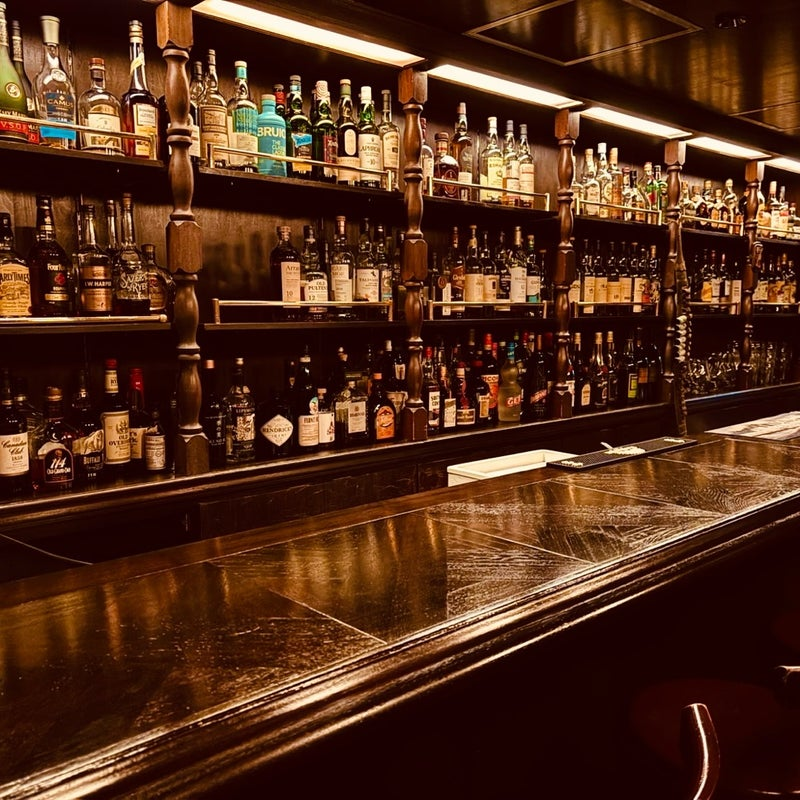

— BAR EORNA MYSTERY —
A DETECTIVE NOVEL
閉店後のBAR EORNA。
一人の男が死んでいた。
密室。証拠なし。容疑者は3人。
探偵・りーくんが真実を暴く。

BAR EORNA · 深夜 PROLOGUE— TRUE ENDING —
りーくん「わかめ。お前が犯人だ。」 わかめは観念したように椅子に座った。 木村「…よくやった、りーくん。」 りーくん「木村さん。この店は守られた。」 木村「ああ。…EORNAはまだ、続く。」 カウンターに静寂が戻った。 グラスの中で、氷がひとつ、溶けた。